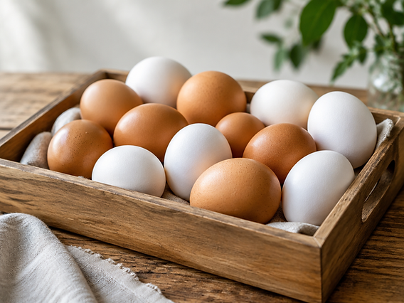
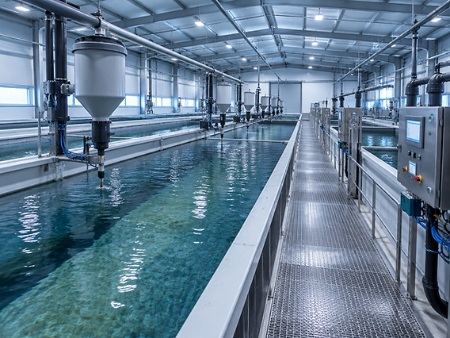

Ômega-3 de microalgas. Tecnologia para a nutrição do futuro.
O AlgaPrime DHA é uma tecnologia CORBION apresentada e distribuída pela UNIAVE SP.
.webp)
Uma nova fonte de DHA para a nutrição animal.
O AlgaPrime DHA é uma solução desenvolvida a partir de microalgas do gênero Schizochytrium, utilizada como fonte de DHA na alimentação animal.
A tecnologia permite incorporar DHA à dieta por meio de uma fonte alternativa ao óleo de peixe, ampliando as possibilidades de enriquecimento nutricional.

DHA produzido por microalgas.
O DHA é um ácido graxo da família Ômega-3. Na tecnologia AlgaPrime DHA, ele é obtido a partir de microalgas cultivadas por meio de processos controlados de fermentação.
Enriquecimento nutricional
Possibilidades de aplicação em aves e aquicultura conforme as informações fornecidas pelo fabricante.
Aquicultura
Uso de fontes alternativas de DHA conforme a formulação e as necessidades de cada sistema produtivo.

Nutrição que chega ao produto final.
A incorporação de fontes de DHA na alimentação animal pode ser utilizada em estratégias de enriquecimento nutricional de produtos de origem animal.
A aplicação depende da formulação, da espécie, do sistema de produção e das recomendações técnicas do fabricante.
Alegações nutricionais e valores de DHA são apresentados somente com documentação específica.

Tecnologia também aplicada à produção AQUA.
O uso de fontes alternativas de DHA é uma possibilidade tecnológica para a nutrição de espécies aquáticas, conforme a formulação e as necessidades de cada sistema produtivo.
Tecnologia, orientação e suporte.
A UNIAVE conecta o produtor à tecnologia AlgaPrime DHA, apresentando possibilidades de aplicação e informações técnicas em conjunto com o fabricante.